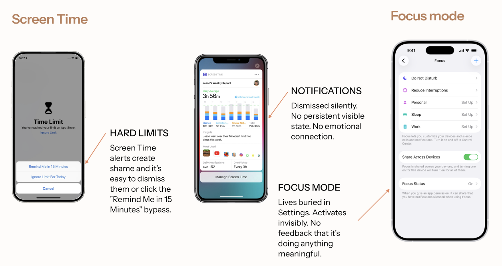
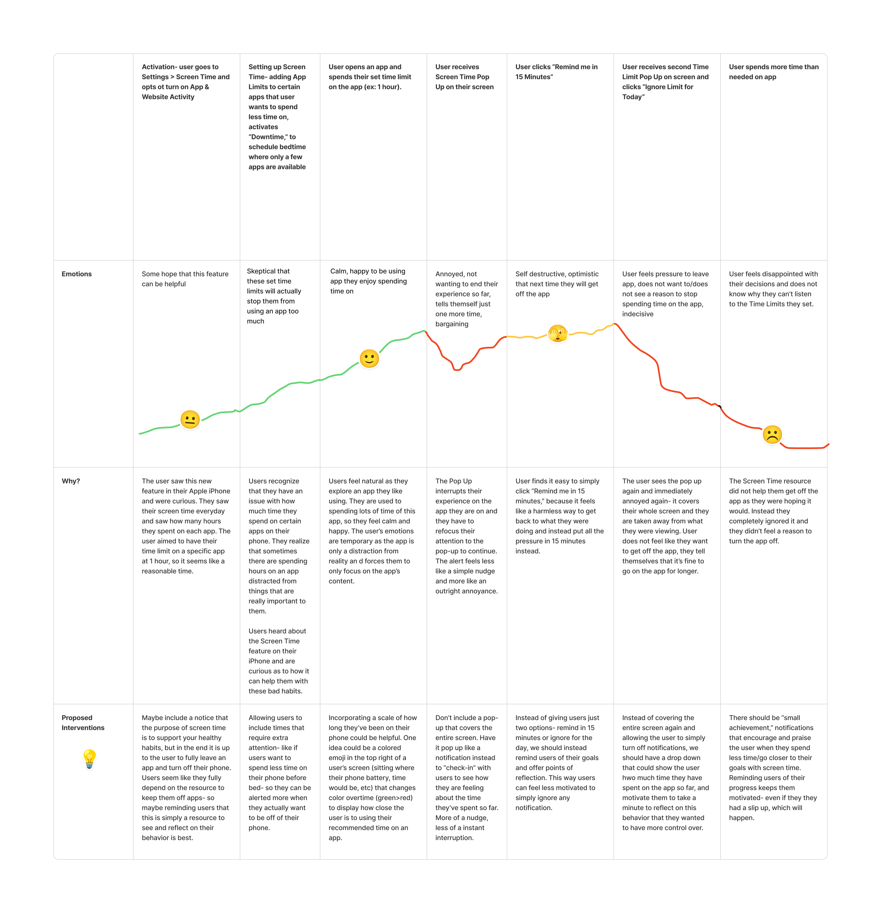
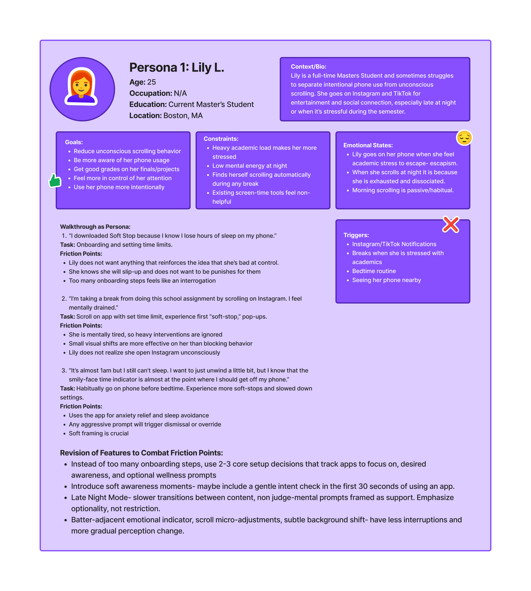

Designing digital wellbeing through awareness, not control
We have the tools. So why are we still scrolling?
Every smartphone now ships with features designed to help people use their phones less (Apple's Screen Time, Focus Mode). And yet, most people still dismiss these tools or don't use them at all. The tools exist, the awareness is there, but the behavior doesn't change.
That gap became our starting point. If the functionality is already there and people are still endlessly scrolling, the problem isn't a missing feature. It's something deeper.

Why timers don't work
Current tools treat phone overuse like a hard limit. But phone use isn't rational it's habitual and emotional, triggered by stress, boredom, or restlessness more often than conscious choice.
Two hours on Instagram at midnight is nothing like two hours of intentional reading in the afternoon. But both trigger the same pop-up. The result is a cycle that most people know well: dismiss the alert, feel a flicker of guilt, keep scrolling.
Interventions that interrupt, not integrate
Pop-ups arrive after a threshold is crossed, outside the moment they're trying to change. By the time the alert appears, the behavior has already taken hold.
One-size responses to complex behavior
Time limits treat every session the same, regardless of context, emotional state, or what the person was actually trying to do.
Guilt without growth
Hitting a limit doesn't spark reflection. It just makes people feel bad. Users close the app feeling worse but don't build new habits.
Alerts get ignored over time
The same notification appearing every day eventually becomes wallpaper. Users swipe it away automatically, which is exactly what the tool was meant to interrupt.
What we set out to build
We designed Soft Stop, a speculative mobile app that shifts the focus from control to awareness. Rather than blocking behavior, Soft Stop pays attention to how someone is engaging, not just for how long. The goal was to surface moments of recognition within the interaction itself, giving people space to make a choice rather than forcing one on them.
Grounding the work in emotion and habit
Soft Stop is built on two bodies of theory that shaped every design decision we made.
Don Norman's Three Levels of Emotional Design
Norman (2004) describes how emotional responses to design operate at three interconnected levels. This framework became the backbone of our design language:
Visceral
First impressions and sensory response. We used gentle, warm visual cues like gradual screen dimming and a soft companion emoji that signal without alarming.
Behavioral
The feel of using the app. Reflective prompts, visual indicators, and intent-checking nudges help users notice their patterns as they happen.
Reflective
Long-term meaning and memory. Weekly insights, mindful pause suggestions, and post-session summaries build a sense of progress over time.
Natasha Dow Schüll and The Machine Zone
Schüll's research on addictive technology describes a state of absorbed, dissociative interaction she calls the "machine zone," where users lose awareness of time and intention. Behavior stops being a choice and becomes a self-reinforcing loop. This helped us understand what we were actually designing against: not bad decisions, but the absence of decision-making entirely.
Rather than measuring time, Soft Stop looks for the behavioral signatures of that dissociative state and tries to gently surface users back out of it:
Unlock frequency reflecting repeated checking behavior
App-switching rate indicating fragmented attention
Time-of-day patterns capturing contextual vulnerability
Scroll speed suggesting depth and intensity of engagement
Notification response time indicating immediacy of reaction
Repeated app re-opening signaling compulsive return
Individually, these signals don't tell you much. Together, they start to approximate the machine zone and give Soft Stop a basis for stepping in at the right moment, not just the right time.
Two methods, one goal: understand what's actually driving the behavior
We used two emotional design methods, each building on the last, to move from mapping pain points to understanding the emotional needs underneath them.
Emotional Journey Mapping
We mapped the full emotional experience of using Apple's iOS Screen Time, from initial setup through the repeated pop-ups that appear when a limit is hit. Three clear low points emerged: the first alert (frustration; tap "15 more minutes" and move on), the second alert (more annoyance; choose "Ignore for today"), and the final realization of having gone over the limit (disappointment and self-criticism). What stood out wasn't just that emotions dropped at each moment. It was why. Every intervention felt like a judgment, not a nudge. Users weren't reflecting on their behavior. They were just feeling bad about it.

Inclusive and Affective Persona Analysis
We built an affective persona, Lily L., based on early user interviews. Lily represents the kind of habitual phone user a lot of us recognize: she opens Instagram when she's stressed, scrolls before bed, checks her phone first thing in the morning. She knows it's a problem. She already feels ashamed about it. What Lily needed wasn't another system telling her she'd failed. She needed something that felt like it was actually on her side. This persona pushed our design direction firmly toward support and away from surveillance.

Initial User Testing
We tested a first prototype iteration and asked participants to reflect on how the visuals made them feel, whether the flow felt intuitive, and whether they'd actually trust it. All four responded positively to the color palette and layout. They liked the onboarding but had questions about how often the pop-ups would appear. They would recommend it to others, but felt it needed more personalized setup to match their individual goals. The clearest signal: they did not want to feel controlled, even by a tool that was meant to help them.
What we learned
Feedback needs to feel supportive, not corrective
Users shut down when something feels like a verdict. Reframing the tone from "you're doing this wrong" to "here's something you might not have noticed" changed everything.
Checking intent creates space for reflection
A short pause after opening an app, asking why you opened it, raises awareness before the behavior becomes automatic. Twenty seconds is enough.
Autonomy is non-negotiable
People want help building better habits on their own terms. The moment a tool feels like it's in charge, it loses them.
Make the invisible visible
Users liked the use of haptics like a dimming screen, slower scroll, or a non-intrusive state indicator. It helped users close the app but some expressed annoyance even though they set the limit.
Users want nudges that feel supportive and encouraging, not repetitive interruptions that are easy to dismiss.
— Emotional Journey Mapping synthesisTesting two directions, three prototypes, and one key pivot
With our research in hand, we developed two onboarding concepts and three functional prototypes to test how Soft Stop could fit into users' existing routines without feeling like one more thing to manage.
Onboarding: Standalone vs. Embedded
We tested whether Soft Stop should introduce itself as a new standalone app or sit quietly inside iOS Screen Time settings. Both approaches had real tradeoffs.
More control but higher friction
Users could build a personalized setup from scratch, choosing apps, vulnerability windows, time limits, and visual preferences. Rich in options, but it asked for a bigger commitment before people had seen any value.
Familiar but limited
Embedding Soft Stop inside the existing Screen Time felt like a natural extension. Users didn't have to decide to try a new app. It was already part of a system they knew. This would mean sticking to the Apple design system, which means less creative freedom.
Users responded significantly better to the standalone flow due to the more nuanced level of personalization. We moved forward with Flow 01.
Functional Prototypes: How should an intervention feel?
We built three prototypes showing Soft Stop in action during active use, specifically while scrolling Instagram. Each explored a different theory of how to step in without being intrusive.
Friction and Stats
A mid-scroll interruption with usage data showing things like scrolled 410 ft and 30 minutes in feeds. Explicit and data-rich, but users found it too disruptive. The numbers felt like a punishment more than useful information.
Intent-First Onboarding with Limit Feedback
Longer onboarding that asked about goals, feelings, and app habits before setting limits. More personalized, but users wanted the in-session nudges to be lighter once they were actually using the app.
Companion Creature with Gradual Visual Fading
A floating emoji companion in the Dynamic Island that slowly shifts expression as screen time builds up, paired with progressive screen desaturation. Users responded most positively to this one. "It noticed without yelling at me" was how one person put it.
The most effective interventions made overuse feel visible without assigning blame. Emotional tone, not information density, determined whether users engaged or dismissed.
A gentle companion, not a gatekeeper
The final prototype pulls together everything we learned into something that feels less like a restriction and more like a quiet presence that notices when you've drifted.


Key Design Decisions
Emoji companion in the Dynamic Island
As screen time builds up, a small emoji appears in the Dynamic Island, starting neutral and gently shifting expression over time. It doesn't pop up demanding attention. It just sits there, quietly reflecting the user's state back at them. Users described it as "it noticed without yelling at me." Awareness happens within the experience, not after it's already over.
Progressive visual fading
As users approach their self-set limit, the interface gently desaturates. Not a hard stop, but a gradual shift in the environment itself. It makes the invisible state of extended use literally visible, without any text or interruption required.
Intent check at app open
When users open a tracked app, Soft Stop surfaces a brief pause: "Before you scroll, you said you wanted to sleep better." That 20 second moment is intentional. It interrupts the automatic motion of opening an app and creates room for a choice. Not a block, just a breath.
Mindful pause, not hard stop
When a soft limit is reached, instead of a wall, users see: "Time for a soft stop." They're offered three small actions, Hydrate, Meditate, or Self-care, and a 5-minute break timer. The experience is actionable and forward-looking. It ends with a box-breathing exercise and a brief reflection summary.
Personalized, iOS-integrated onboarding
Setup lives inside iOS Screen Time settings on familiar ground. Users answer questions about how they want to feel, what they tend to scroll away from, and which apps concern them most. The result is a system that feels built around them rather than deployed at them.
What this project taught me about designing for human behavior
Emotional tone is a design material.
We spent more time thinking about how information should feel when it arrived than about what information to show. The difference between a pop-up that shames and one that supports is almost entirely the tone.
Designing for agency requires restraint.
The instinct in wellbeing design is to intervene more: add friction, force reflection, block access. But our users made it clear that the moment a system feels like it's in control, they disengage entirely. The most impactful choices we made were things we decided not to do. Not block, not shame, not require.
Behavior change lives at the visceral level, not the reflective one.
We started with a heavy focus on reflective features: summaries, insights, habit tracking. But users responded most to things they felt before they could name them, the gradual dimming, the quiet companion, the pause before scrolling. This project shifted how I think about design: if you want to change behavior, you have to reach people at the level where behavior actually happens.
A good design asks the question, not just answers it.
The intent check moment, that 20-second pause asking why you opened this app, became the heart of Soft Stop. It doesn't tell users what to do. It just creates the conditions for them to notice what they're already doing.